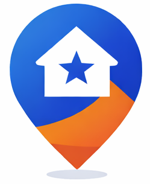

La marketplace de confiance qui connecte les particuliers et les professionnels de services au Mali.
Barasira organise un marché encore largement informel : trouver rapidement un prestataire compétent, vérifier son parcours, convenir d’une mission, payer de façon sécurisée et évaluer la prestation. La plateforme transforme ce parcours fragmenté en une expérience numérique unique.
Prélevée sur le montant d’une mission payée ; 90 % sont attribués au prestataire.
Clients en recherche de confiance et prestataires en recherche de missions.
Mobile money, carte bancaire et PayPal selon les parcours disponibles.
Concentrer le lancement sur Bamako et quelques catégories à forte fréquence avant toute expansion géographique. L’objectif initial n’est pas le volume d’inscriptions, mais le nombre de missions effectivement payées et satisfaisantes.
Profils vérifiésDiplômes & certificationsMissionsInvitationsMessageriePaiement sécuriséAvisE-mail & WhatsAppRéseau partenairesTraduction FR/EN/BMAudit administrateur
« Trouver et engager un professionnel crédible, payer simplement et garder une trace de la prestation. »
« Transformer ses compétences en missions rémunérées et construire une réputation professionnelle portable. »
| Segment prioritaire | Besoin principal | Réponse Barasira |
|---|---|---|
| Ménages urbains | Urgence, confiance, simplicité | Recherche locale, profils, avis, paiement |
| Propriétaires / gestionnaires | Prestataires récurrents et traçabilité | Historique des missions, messagerie, favoris |
| Artisans et indépendants | Flux de demandes qualifiées | Services publiés, invitations, candidatures |
| Petites entreprises | Sous-traitance flexible | Missions structurées et profils vérifiables |
Périmètre initial conseillé : plomberie, électricité, climatisation, ménage, réparation et petits travaux — à confirmer par entretiens et analyse des recherches.
| Scénario | Missions payées | Panier moyen | GMV mensuel | Revenu brut Barasira |
|---|---|---|---|---|
| Validation | 200 | 25 000 FCFA | 5 000 000 FCFA | 500 000 FCFA |
| Traction | 1 000 | 30 000 FCFA | 30 000 000 FCFA | 3 000 000 FCFA |
| Échelle locale | 5 000 | 35 000 FCFA | 175 000 000 FCFA | 17 500 000 FCFA |
GMV = valeur totale des missions payées. Ces chiffres sont des hypothèses de travail à tester ; ils n’incluent ni frais de paiement, ni remboursements, ni taxes, ni promotions.
| Étape | KPI | Cible initiale indicative |
|---|---|---|
| Acquisition | Coût par client activé / prestataire actif | Suivi hebdomadaire par canal |
| Activation | Profils complets ; missions recevant une réponse | > 70 % ; > 80 % |
| Conversion | Mission publiée → mission payée | > 25 % au démarrage |
| Qualité | Note moyenne ; litiges ; annulations | ≥ 4,5/5 ; < 3 % ; < 10 % |
| Rétention | Clients avec une 2e mission à 90 jours | > 30 % |
| Économie | LTV/CAC ; marge contributive | > 3 ; positive par cohorte |
| Levier | Budget | Part | Objectif |
|---|---|---|---|
| Publicités sociales géolocalisées | 3,0 M | 25 % | Créer la demande par catégorie et quartier |
| Activation terrain et événements | 2,4 M | 20 % | Recruter et vérifier clients et prestataires |
| Parrainage et offres de lancement | 2,4 M | 20 % | Accélérer la première mission et la recommandation |
| Contenus, témoignages et SEO local | 1,8 M | 15 % | Construire la confiance et l’acquisition organique |
| Co-marketing partenaires | 1,2 M | 10 % | Mutualiser les audiences et événements |
| Mesure, outils et expérimentation | 1,2 M | 10 % | Attribuer les conversions et optimiser les campagnes |
| Total | 12,0 M FCFA | 100 % | Budget cohérent avec le plan de financement |
NotoriétéVisite qualifiéeMission publiéePrestataire affectéPaiementAvis & récurrence
| Période | Priorité | Indicateurs de décision |
|---|---|---|
| Jours 1–30 | Pré-lancement : offre, ambassadeurs, contenus et listes d’attente | Prestataires vérifiés, profils complets, coût d’activation |
| Jours 31–60 | Lancement concentré sur 3–5 catégories et une zone précise | Réponse aux missions, conversion et CAC par canal |
| Jours 61–90 | Optimisation, témoignages, parrainage et réactivation | Missions payées, note, répétition et LTV/CAC |
Cibles initiales : coût marketing par mission payée ≤ 4 000 FCFA, taux mission publiée → payée > 25 %, réponse qualifiée > 80 %, réachat à 90 jours > 30 % et LTV/CAC > 3.
Le lancement doit rester compact mais couvrir six fonctions critiques : direction, technologie, opérations de confiance, acquisition, support et pilotage financier. Les fondateurs peuvent cumuler certains rôles durant les six premiers mois, sans supprimer la responsabilité associée.
| Ressource | Besoin de départ | Finalité |
|---|---|---|
| Équipe cœur | 6 personnes + experts externalisés | Exécuter rapidement tout en gardant des responsabilités claires |
| Technologie | Cloud, sauvegardes, supervision, sécurité, SMS/e-mail, analytics | Disponibilité, confiance et mesure du funnel |
| Matériel | 6 ordinateurs, téléphones de test, réseau secouru, mobilier léger | Continuité de service et travail hybride |
| Opérations terrain | Vérification, déplacements, ateliers prestataires, support | Construire une offre locale fiable |
| Cadre administratif | Société, contrats, comptabilité, assurance, protection des données | Réduire le risque légal et financier |
| Poste sur 12 mois | Montant | Part | Hypothèse |
|---|---|---|---|
| Salaires et charges provisionnées | 36 000 000 | 42 % | Équipe cœur progressive, rémunération locale maîtrisée |
| Marketing et acquisition | 12 000 000 | 14 % | Terrain, digital, contenus, parrainage et événements |
| Technologie et sécurité | 6 000 000 | 7 % | Cloud, SMS, e-mail, sauvegardes, monitoring et audits |
| Équipements de départ | 7 000 000 | 8 % | Ordinateurs, téléphones, réseau et mobilier |
| Locaux, énergie et connectivité | 5 000 000 | 6 % | Espace léger avec solution de continuité électrique |
| Juridique, comptabilité et assurance | 3 000 000 | 4 % | Création, contrats, paie, conformité et conseil |
| Opérations terrain et formation | 4 000 000 | 5 % | Vérification et activation des prestataires |
| Réserve support, incidents et remboursements | 2 000 000 | 2 % | Protection de l’expérience client |
| Trésorerie de sécurité | 10 000 000 | 12 % | Retards, inflation, change fournisseur et imprévus |
| Total | 85 000 000 | 100 % | Runway de 12 mois sans dépendre du chiffre d’affaires |
Scénario central en millions de FCFA. Il suppose une commission de 10 %, le développement progressif des mises en avant, offres Pro/B2B et une expansion géographique maîtrisée à partir de la troisième année.
| Indicateur | Année 1 | Année 2 | Année 3 | Année 4 | Année 5 |
|---|---|---|---|---|---|
| Missions payées | 3 000 | 18 000 | 70 000 | 150 000 | 280 000 |
| Panier moyen | 30 000 | 32 000 | 35 000 | 38 000 | 40 000 |
| GMV | 90 | 576 | 2 450 | 5 700 | 11 200 |
| Commissions transactionnelles | 9 | 57,6 | 245 | 570 | 1 120 |
| Pro / B2B / sponsoring | 2 | 12,4 | 35 | 80 | 180 |
| Chiffre d’affaires | 11 | 70 | 280 | 650 | 1 300 |
| Personnel | 36 | 68 | 105 | 160 | 240 |
| Marketing et ventes | 12 | 28 | 48 | 85 | 145 |
| Technologie et sécurité | 6 | 14 | 25 | 45 | 75 |
| Opérations, paiement et support | 7 | 12 | 20 | 55 | 110 |
| Administration et locaux | 8 | 6 | 12 | 25 | 40 |
| Charges opérationnelles | 69 | 128 | 210 | 370 | 610 |
| EBITDA | -58 | -58 | 70 | 280 | 690 |
| Amortissements | 2 | 7 | 10 | 15 | 22 |
| Impôts provisionnels | 0 | 0 | 10 | 70 | 180 |
| Résultat net indicatif | -60 | -65 | 50 | 195 | 488 |
Montants en millions de FCFA, en fin d’exercice. Cette présentation de pilotage doit être transformée en états financiers complets par un expert-comptable selon la forme juridique et les règles fiscales retenues.
| ACTIF | Année 1 | Année 2 | Année 3 | Année 4 | Année 5 |
|---|---|---|---|---|---|
| Trésorerie disponible | 20 | 14 | 52 | 235 | 700 |
| Créances et charges d’avance | 2 | 5 | 10 | 20 | 35 |
| Immobilisations nettes | 5 | 10 | 18 | 30 | 53 |
| Total actif | 27 | 29 | 80 | 285 | 788 |
| PASSIF | Année 1 | Année 2 | Année 3 | Année 4 | Année 5 |
|---|---|---|---|---|---|
| Capitaux apportés cumulés | 85 | 150 | 150 | 150 | 150 |
| Résultats cumulés | -60 | -125 | -75 | 120 | 608 |
| Capitaux propres | 25 | 25 | 75 | 270 | 758 |
| Dettes d’exploitation | 2 | 4 | 5 | 15 | 30 |
| Total passif | 27 | 29 | 80 | 285 | 788 |
| Fin d’exercice | Année 1 | Année 2 | Année 3 | Année 4 | Année 5 |
|---|---|---|---|---|---|
| Trésorerie | 20 M | 14 M | 52 M | 235 M | 700 M |
| Lecture | Coussin initial | Après levée relais | Retour positif | Autofinancement | Capacité d’expansion |
Barasira dispose d’un espace administrable permettant d’enregistrer une entreprise, son contact principal, son logo, son site web et son statut de publication. Les partenaires publiés bénéficient d’une présence sur la page d’accueil et dans un annuaire public dédié. Une mise en avant sponsorisée peut être planifiée ; jusqu’à deux campagnes actives sont classées selon le montant payé. Une page commerciale permet au partenaire de choisir une formule et d’envoyer directement sa demande à l’équipe.
| Formule | Durée | Tarif public | Usage conseillé |
|---|---|---|---|
| Découverte | 7 jours | 50 000 FCFA | Événement ou test de visibilité |
| Visibilité | 30 jours | 150 000 FCFA | Campagne continue et acquisition |
| Impact | 90 jours | 350 000 FCFA | Présence de marque et partenariat durable |
| Partenaire | Positionnement dans l’écosystème | Activation possible |
|---|---|---|
| Urgol Events Mali | Événementiel | Événements de recrutement, visibilité et rencontres métiers |
| Les Petits Stylos | Éducation et créativité | Sensibilisation, contenus et actions communautaires |
| Risque | Niveau | Réponse recommandée |
|---|---|---|
| Contournement après mise en relation | Élevé | Garantie, paiement protégé, historique et avantages réservés à la plateforme. |
| Qualité hétérogène | Élevé | Vérification graduée, essais terrain, avis liés à une mission payée. |
| Marché insuffisamment liquide | Élevé | Focalisation géographique et catégories limitées au lancement. |
| Litiges et remboursements | Moyen | Preuves, photos, règles claires, médiation et réserve opérationnelle. |
| Dépendance aux paiements | Moyen | Plusieurs moyens de paiement, rapprochement et suivi des échecs. |
| Données personnelles / conformité | Moyen | Cookies marketing sur consentement, documents privés, accès contrôlé, audit des actions, explorateur de données en lecture seule et masquage des secrets. |
Entretiens utilisateurs, cohortes pilotes, instrumentation du funnel, procédure de vérification et support des premières missions.
Optimiser catégories gagnantes, réputation, relances, paiement et acquisition locale. Mesurer la rétention par cohorte.
Améliorer la marge contributive, lancer prudemment le pack Pro et des partenariats B2B.
Dupliquer le playbook dans d’autres zones uniquement si liquidité, qualité et économie unitaire sont démontrées.
Référence macroéconomique : BCEAO, Rapport sur la politique monétaire dans l’UMOA, juin 2026 — inflation moyenne projetée à 1,6 % en 2026 et 2,1 % en 2027. Le budget conserve néanmoins une réserve supérieure pour absorber les risques opérationnels locaux.